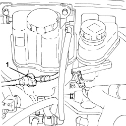
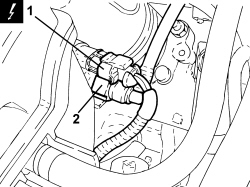

1080E63 FUEL VAPOR HOSE BETWEEN RIGID PIPE AND CUT OFF SOLENOID - R.R.
- Path
- Procedures > 10 ENGINE > 1080 EMISSION CONTROL SYSTEM > 1080E EVAPORATION CONTROL SYSTEM > 1080E63 FUEL VAPOR HOSE BETWEEN RIGID PIPE AND CUT OFF SOLENOID - R.R.
- Kind
- repair procedure (removal / refitting; the operation number is the code)
- Applies to
- engines: 2.2 JTS; all production periods
- Interactive page
- https://sloeber94.github.io/elrnDB-aBrrSpdr/en/#/946001983
Applies to: engines: 2.2 JTS; all production periods
 Removing
Removing
 Refitting
Refitting1. Disconnect the fuel vapour pipe quick coupling.

Applies to: engines: 2.2 JTS; all production periods
1. Detach the electrical connection for the fuel vapour recovery solenoid valve.
Description | Connector | |
|---|---|---|
1 | Fuel vapour recovery solenoid valve |
2. Disconnect the flexible fuel vapour pipe quick coupling from the fuel vapour recovery solenoid valve.

Applies to: engines: 2.2 JTS; all production periods
Refitting
Removing- Position the pipe and connect the quick couplings to the fuel vapour recovery solenoid valve and the rigid fuel vapour pipe.
- Secure the electrical connection for the fuel vapour recovery solenoid valve.